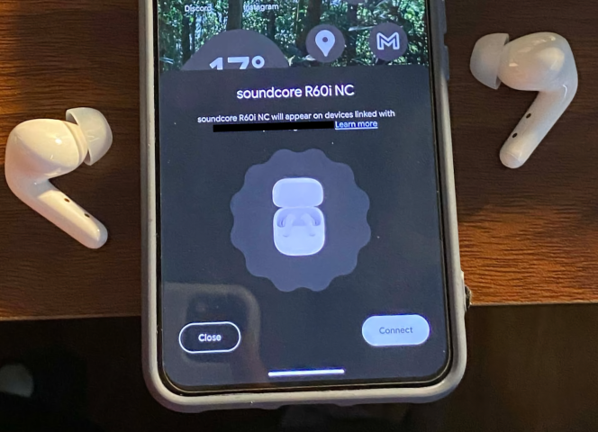

Quick Review: Soundcore R60i NC
Soundcore R60i: Pretty Decent
a review by hmuy
introduction / background
I listen to music a lot, but no way am I going to give myself the label of an “audiophile” lol. I despise the label, and also I don’t really have any knowledge to even call myself one. Anyways, after years of garbage laptop speakers and e-waste-bin special earbuds (aka headphones pulled from phone boxes), my first half-way decent audio experience was with a pair of KZ EDX Pros (5 bucks btw LMAO), which lived with me for 2 out of my 3 years of my high school life. Then for the final year I “treated” myself to a pair of Moondrop Chu 2s and they were (and still are amazing). Bliss, right?
Anyways, I’ve always been a detractor of the “true wireless earbuds” trend that Apple courageously spearheaded when they removed the headphone jack back in 2016, while conveniently introducing the original AirPods. I consider them to be “manufactured e-waste”, not just because of tech companies’ tendency to glue everything shut, but the very nature of them being incredibily small and lightweight also means that there simply aren’t any space for repairable design decisions (yes Fairbuds exist and gold star for them, but you gotta admit that compromises had to be made to accomodate a removable battery in the buds).

Alas, I realized I was fighting the inevitable. The convenience factor was getting too big to ignore, especially considering that I had to use my IEMs more and more in class for various reasons. I eventually got a Soundcore R50i (non-NC) just as a crude earplug and personal speaker without much need in terms of sound quality or features, but fast foward a few months and a move to a shitty city, it turns out that ANC (active noise cancellation) is actually important to me now.
A few swipes around Vietnamese Facebook tech and audio forums and it turns out, Soundcore just released the sequel to the uber-popular R50i NC and the couple (non audio-focused) reviews point to them being really good for what you’re paying for. Of course, I impulsively stretched my monthly budget and bought one for 600k VND (~$22.8 USD). University life, amirite?
Fast forward a week later, how are they like so far?
the “review”
unboxing and first use
Nothing special in the box, just you run-of-the-mill mix of the earbuds themselves in their (surprisingly) large case (I’ll come back to this later), extra silicone eartips of various sizes (size “M”) ones are already on the earbuds, and some paperwork.
I was pleasantly surprised with the out-of-box first pair experience. These support Google’s Fast Pair, meaning that they automatically connect to the nearest Android phone and syncs with the rest of your devices in the Google ecosystem, Apple-magic style.

design / fit and finish
the earbuds
Coming from the regular R50i, the earbuds themselves are built very well for the price, and they certainly look a lot better than their predecessors. The new rounded design resembles the much more expensive Liberty 4 series. I did make the mistake of buying white ones though, so they get crazy dirty easily, but that’s on me. (why can’t they be matteeeeeeee)
As for actual fitment and comfort in the ears, I find them to be a lot more comfortable than my old R50i. The slimmer stem profile and a more unibody-esque design means that I can comfortably wear these for extended periods of time without fatigue, since they’re also fairly light. Furthermore, various provided silicone tip options and an (in my opinion) inoffensive shape mean that they’ll probaby fit a large number of ear shapes1.
the case
The case does leave a lot to be desired, though. First off, it’s huge. Like, noticeably bigger than even the AirPods Pro cases, and are basically double the volume of every other case that I’ve seen. While they do provide more battery charge than others, I would’ve still prefer a significantly smaller case for pocketability. Another issue is with the build quality. Now you can’t exactly expect amazing things coming from uber-budget buds, but the hinge wobbles and features a significant gap which is far from ideal.
Despite all that, I still like the actual design of the case. It avoids the (somehow) popular mistake that other models have by sporting a matte finish, and the status LED is cleverly hidden in the gappy-thingy that you open the case from. There’s also a hole for landyards, if that’s your kind of jam.
Overall, not amazing, but not bad.
sound quality
Ehh, they sound fine? I was expecting some muddy and bassy tuning considering the evaluations that I’ve read and people’s preference with these cheap buds, but they aren’t bad at all. Expectedly there’s a lot of bass (still not my kinda thing), but the low ends sound pretty damn clear, especially for electronic / EDM types, although you don’t really feel that sub-bass rumble.
My biggest problem with these though are with vocal / instrument seperation and the high-end. First off, everything in the mids are kinda just smushed together, with none of the instruments or vocals standing out from each other, which is pretty evident in more pop / rock types of tracks. Now you can mitigate this a bit by turning up the volume, but I wouldn’t recommend that since these don’t really “come alive” until that “too loud” stage 2. Still, they avoid sounding offensive, with little to no distortion throughout the mid-band.
The high-end, especially cymbals and hi-hats though, sound DISGUSTING. I ain’t an audiophile, but my god these are just bad with anything over 5-6KHz (I found it especially bad to listen with Yorushika’s That’s Why I Gave Up on Music and FELT’s New World). Now I did get used to it with some EQ-ing, but I still have to actively avoid listening to some of my favourite songs just because they sound so grainy, harsh and distored at higher frequencies. Now I’m sure (and hope) someone is gonna make an AutoEQ curve of these soon™, but if your preference are more towards neutral / v-shaped curves, j-pop / rock and higher female vocals, consider doing some EQ on these.
The Soundcore app does provide some preset EQ curves, but I found none of them to be actually good for listening to music. Maybe you’ll use the “bass reducer” preset, but that’s about it. Stick with the stock curve, and do your own tuning. Or just wait for someone to make one like I do. There’s also a supposed “Preference test”, which is the app’s attempt to guess your preferences by making you chose various samples, but I didn’t find it to be particularly helpful. Also, while the built-in EQ utility is handy as you don’t have to do it on every connected device, it’s just bad lmao. Don’t bother.
An upgrade from the R50i NC is support for Sony’s LDAC codec, and I do find it to make a noticeable improvement in sound quality over AAC. These sound better connected to my Pixel 8 with LDAC than my iPhone / Windows PCs with AAC.
In short, if you’re a bass head, these are good. For anything else, prepare for some manual EQ’ing for now. I’m still sticking with my Moondrop Chu 2s for when I want to actually listen to music. Critical listening devices, these are not.
I could just be spewing absolute bullshit on this section though. As I said, I’m definitely NOT an audiophile lmaooo
active noise cancellation / transparency mode
Oh wow I actually get it now. These puch wayyy above their weight class in terms of active noise cancellation, and coupled with the great passive noise isolation from the silicone eartips, you might as well be wearing earplugs for 98% of the time3. That’s not to say they are perfect, though. They can’t respond well to what I call “spontaneous” noises, such as horns, clanking noises and the likes, but that’s par for the course. And as with any ANC earbuds, especially cheaper ones, you’re gonna have to get used to that pressurized feeling from using active noise-cancelling.
There are a few options for ANC:
- Adaptive: Adjusts ANC level based on outside noise, with help from the ear-facing microphones.
- Manual: I don’t need to explain this. Why is this not an option on AirPods.
- Multi-scene: Built-in presets that you can choose depending on your current situation.
Transparency mode is decent, letting through most of the noises that I actually need to care about while commuting with my earbuds in. They’re far from the “it’s as if I’m not wearing headphones” level though, with some sounds ending up compressed and slightly distored, and they don’t come close to letting all the noise through like some other really good transparency modes from other brands. There’s also a wind noise reduction mode, which is better than what I expected.
In short, while more expensive pairs of earbuds do have considerably better ANC / transparency, long gone are the days that you have to pony up an arm and a leg to get straight up good ANC, and these puppies will get you 95% of the way there for a fraction of the price.
battery life
Anker rates these for 10 hours of battery life while in passive mode, and 8 hours with ANC / transparency on. I have nothing to say other than “these have been satisfactory”, and they easily pass my 7+ hour late night listening / sleeping sessions.
The case provides around 5 full charges of the buds from dead to 100%, which is plenty in my opinion. Again, I would’ve still preffered a smaller case battery in exchange for a smaller footprint, but all is well. There’s also fast charging, adding another 3.5 hours of listening time in only 10 minutes, so that’s cool.
app / features
One of the headline features of these puppies are their “built-in” “AI” for real-time language interpretation4. And as with any company’s current agenda of enshittification, Anker’s got their own ChatGPT wrapp- ahem “AI assistant”. Peep my enthusiasm right there. Anyways, one good thing about Anker (for now at least) is that they don’t absolutely shove enshittification right in your face. Every corporate feature stays away once you get into the headphone options.
The app is surprising feature-rich in my opinion. You can adjust ANC levels, EQ presets, custom EQ, and touch controls. There’s also a few niftty knick-knacks in the “extra settings” menu, including:
- Loudness monitoring / warning: very helpful if you’re the type to unknowingly turn up music volume and leave them there2.
- Dual connections: very, very useful oh my god I use this all the time. Makes me somewhat less jealous about not having that Apple handoff integration. Also, unlike some other headphones on the market, you can have both your multi-point connection cake and eat your LDAC topping too.
Google Fast Pair was pretty convenient, although it would’ve also been nice to include a hardware paring button on the case instead of relying on magi-automatic paring or touch gestures. Do note though that I haven’t gotten Google’s device sync to work across my two Android phones Apple-style, and I don’t current have an Android TV or ChromeOS device to test, so your mileage may vary on that front.
conclusion
These are good headphones, especially for how much you’re paying for them. At an MSRP of around 30 freedom bucks (although I only paid 23 for these, yay coupons), I don’t think I could ask more from a pair of true-wireless earbuds with active noise cancelling. The audio quality is plenty fine, there’s plenty of features and you’re getting arguably the best app and ANC at this price point.
As for alternatives:
- Moondrop Space Travel 2 Ultra: Far superior sound quality and a more balanced tuning. However, you’re giving up a bit of ANC performance, the app is garbage and Moondrop doesn’t exactly have a good track record for quality control, including uneven battery drain and dead buds after just a few months.
- QCY Melobuds Pro: Decent audio quality with a much more pocketable case and arguably a less bloated app, but they’re a bit more expensive with slightly inferior ANC, and one might not want to stretch the budget for them.
Overall, a good buy.I’m still mad about buying these in white though.
There’s still a case to be made for wired IEMs, especially if you don’t need / want ANC since any decent pair around 25-30 freedom bucks will demolish any pair of wireless headphones that costs several times the price in terms of sound quality and longevity. You also get the bonus of staying away from corporate planned obsolescence / enshittification and keeping some eventual e-waste out of the landfills.
Also my ass was LYING about being active on this blog 😭😭😭 maybe next year.
-
If you can, try any pair of headphones / IEMs out before making a purchace decision. It doesn’t matter how good they are, if they don’t fit your ears they’re as good as dead. ↩︎
-
Be really, really careful with headphones. Long-term hearing loss is not a joke, especially with non-sealed headphones and / or with transparency mode as they lowers your sensitivity to loud noises. ↩︎ ↩︎
-
These are NOT replacements for earplugs. Protect your hearing properly. ↩︎
-
Department of Pedantry: “Interpretation” is translation of spoken or signed language in real time, while “translation” (as used in marketing materials / the app itself) is for written text. ↩︎